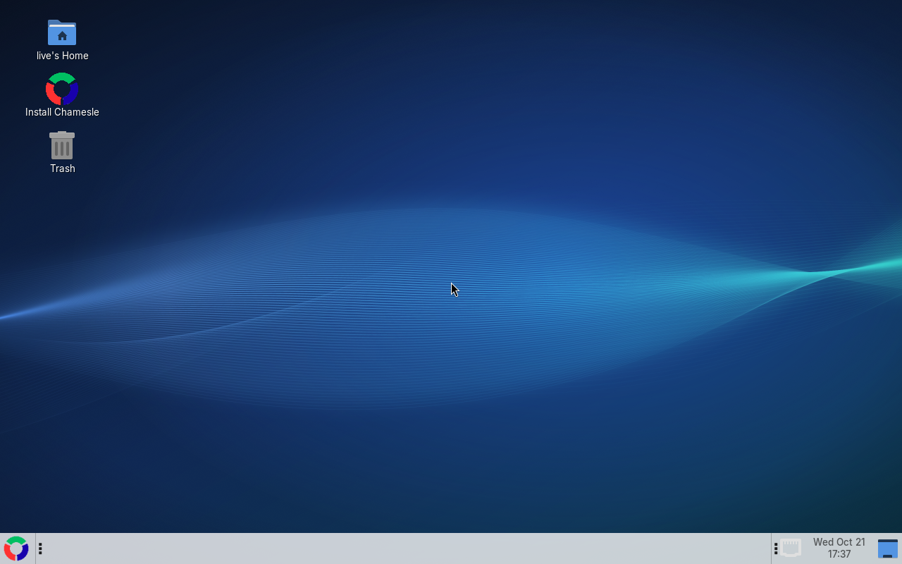

Editions
Same system underneath, different desktop on top. Pick whichever one you like the look of. You can always install another desktop later.
Xfce out now

The one to start with. Light on memory, and set up like Windows: one taskbar at the bottom, start menu bottom left (or press the Windows key), tray and clock bottom right. Fluent windows, Papirus icons and the Inter font, so it looks modern instead of 2008.
Good for: most people, older laptops, anyone coming from Windows. 2 GB RAM is fine.
MATE out now

The desktop Linux Mint's MATE edition is built on, rock solid and very light. Same Chamesle look as Xfce, with Mint's own start menu bottom left (the Windows key opens it too), window buttons along the bottom and the tray and clock on the right.
Good for: old machines, netbooks, people who like things to stay where they put them.
Cinnamon coming
A traditional desktop with a bit more polish and effects. If you've used Linux Mint, this is that desktop.
Good for: Windows switchers with a newer computer.
GNOME coming
Clean, modern, and different from Windows: one top bar, an overview with all your windows, a dock. Works great on touchscreens.
Good for: people who want something new, laptops with touchpads.
KDE Plasma coming
Looks a lot like Windows by default, and you can change almost anything about it.
Good for: tinkerers, gamers, anyone with 4 GB of RAM or more.
Not sure?
Get Xfce. It's the most polished one and runs on pretty much anything. MATE is just as easy, so if you already know it from Mint, pick that.